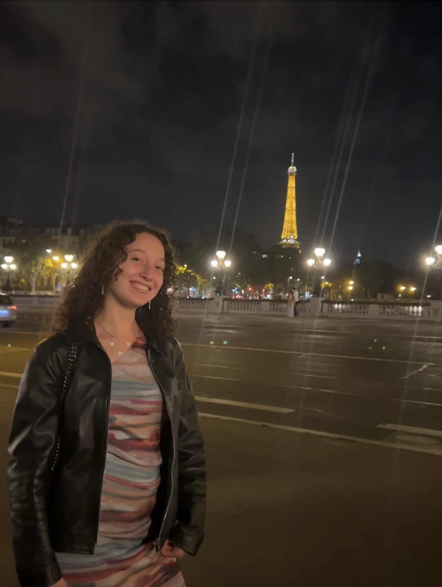

Hello, my name is 𝕰𝖑é𝖆 Gobet
In nutshell, you will see a bit description of my self.
Let's discover my comfort Youtube channelIntroduction of myself
Hi, I am an international track student at EMLV (business school) and I am on my first year.
Currently, I am 18 years old.
I have 2 animals, a cat named Neptune and a dog called Ninja.

Hobbies
After, I have presented myself, then I will describe to you two of my hobbies.
First of all, books are part of me.
Since childhood, I read a lot, and everytime I have the exact feeling, the feeling of being transported into another world.
Romance books are what I've always read,but sometimes It can change.
Secondly, watching 2000's movies makes me the happiest.
The vibes it conveyed, the memories and the emotions, feelings are the reasons why I enjoy so much this type of movies.
Besides, at that time, on my opinion, people were well-dressed too. Hence, their way of dressing inspired me, amaze me...
What i dream of
My biggest dream is to travel all around the world.
I want to discover, see, learn new cultures as my grandfathers, and as my mother did.
So, I will then tell to my children, what I've experienced as they did to me and my sister with so much passion.
They have lived in many countries like for instance, Niger, Abidjan, Tahiti and Morroco.
Hence, they have nowadays an open-minded, a comprehensive one and a mind fool with memories, experiences while their culture has grown...
This is what I also want to achieve and be.
....